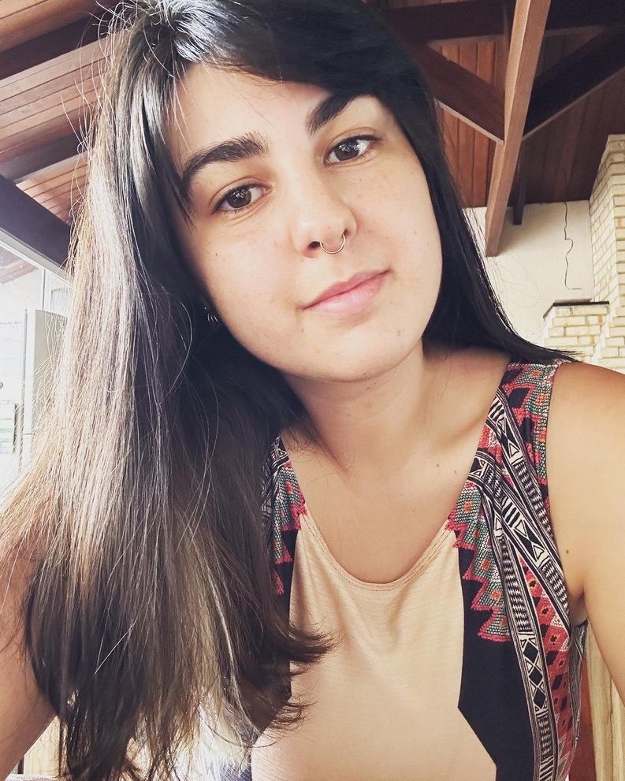
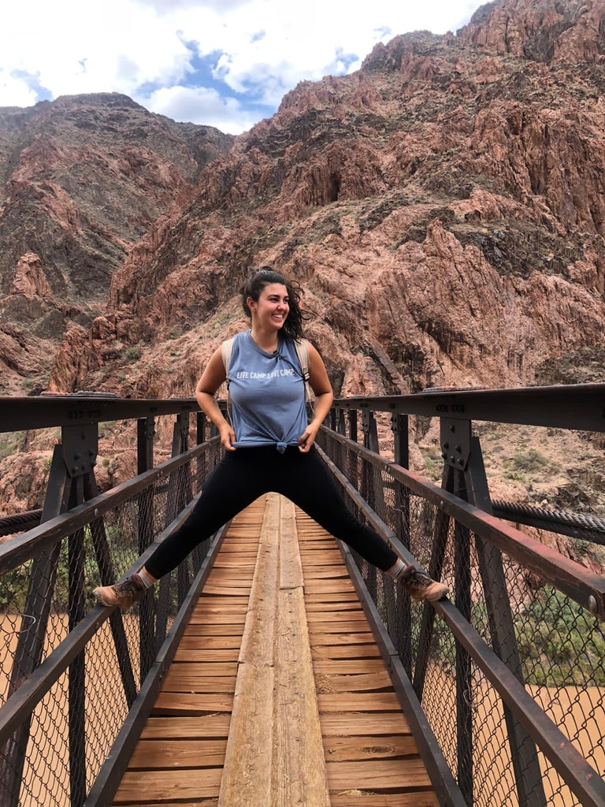

Meu nome é Marina Soares Tozato, tenho 28 anos, sou brasileira e moro na cidade de Goiânia, Goiás.
Trabalho como consultora de intercâmbio e estou estudando Desenvolvimento Web na Trybe.

Algumas das minhas Habilidades:
Uma das minhas habilidades preferidas é a Astrologia, se tornou um método de autoconhecimento muito importante em minha vida. Quando comecei a estudar Astrologia, eu fiz um curso da Isabella Mezzadri com ensinamentos básicos sobre Astrologia. E depois fui me aprofundando em alguns livros, e seguindo astrólogos no instagram e Blogs. Um blog que eu gosto muito é o da Isa e ela tem vários cursos voltados para Astrologia, como o Calendastro, e o Astrojourney que fala sobre Cartografia, que é uma área da Astrologia voltado a viagens, mapa global.
Eu amo viajar pelo país e pelo exterior também. Meu sonho é ter um trabalho remoto em que eu possa trabalhar e viajar o mundo ao mesmo tempo. Já fiz dois intercâmbios, fui para Nova Zelândia em 2016 estudar inglês, e para os EUA como Aupair no ano de 2021 e voltei em Dezembro de 2022. Durante minha viagem para os EUA, eu visitei alguns estados, e um lugar que me marcou muito foi o Grand Canyon, em que fiz uma trilha de 22 km. O lugar é maravilhoso e foi uma experiência muito enriquecedora. Abaixo você encontra uma foto minha na ponte sobre o Rio Colorado, e também algumas viagens nesse mundão.
